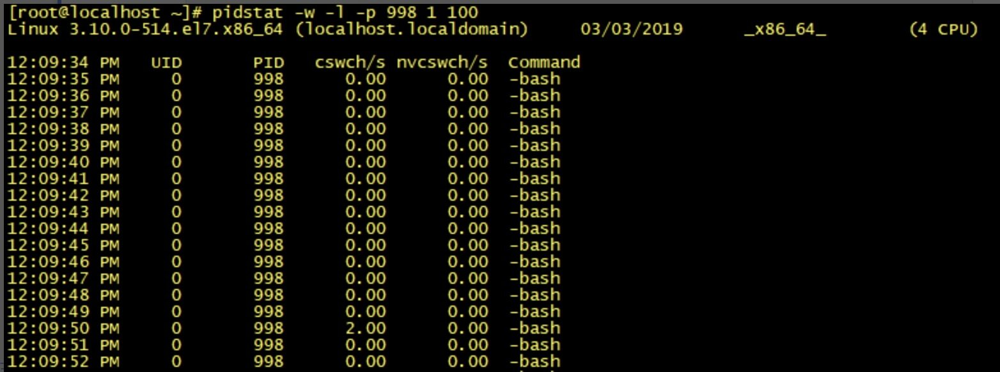

- 00 开篇词你为什么需要学习并发编程？.md
- 01 如何制定性能调优标准？.md
- 02 如何制定性能调优策略？.md
- 03 字符串性能优化不容小觑，百M内存轻松存储几十G数据.md
- 04 慎重使用正则表达式.md
- 05 ArrayList还是LinkedList？使用不当性能差千倍.md
- 06 Stream如何提高遍历集合效率？.md
- 07 深入浅出HashMap的设计与优化.md
- 08 网络通信优化之IO模型：如何解决高并发下IO瓶颈？.md
- 09 网络通信优化之序列化：避免使用Java序列化.md
- 10 网络通信优化之通信协议：如何优化RPC网络通信？.md
- 11 答疑课堂：深入了解NIO的优化实现原理.md
- 12 多线程之锁优化（上）：深入了解Synchronized同步锁的优化方法.md
- 13 多线程之锁优化（中）：深入了解Lock同步锁的优化方法.md
- 14 多线程之锁优化（下）：使用乐观锁优化并行操作.md
- 15 多线程调优（上）：哪些操作导致了上下文切换？.md
- 16 多线程调优（下）：如何优化多线程上下文切换？.md
- 17 并发容器的使用：识别不同场景下最优容器.md
- 18 如何设置线程池大小？.md
- 19 如何用协程来优化多线程业务？.md
- 20 磨刀不误砍柴工：欲知JVM调优先了解JVM内存模型.md
- 21 深入JVM即时编译器JIT，优化Java编译.md
- 22 如何优化垃圾回收机制？.md
- 23 如何优化JVM内存分配？.md
- 24 内存持续上升，我该如何排查问题？.md
- 25 答疑课堂：模块四热点问题解答.md
- 26 单例模式：如何创建单一对象优化系统性能？.md
- 27 原型模式与享元模式：提升系统性能的利器.md
- 28 如何使用设计模式优化并发编程？.md
- 29 生产者消费者模式：电商库存设计优化.md
- 30 装饰器模式：如何优化电商系统中复杂的商品价格策略？.md
- 31 答疑课堂：模块五思考题集锦.md
- 32 MySQL调优之SQL语句：如何写出高性能SQL语句？.md
- 33 MySQL调优之事务：高并发场景下的数据库事务调优.md
- 34 MySQL调优之索引：索引的失效与优化.md
- 35 记一次线上SQL死锁事故：如何避免死锁？.md
- 36 什么时候需要分表分库？.md
- 37 电商系统表设计优化案例分析.md
- 38 数据库参数设置优化，失之毫厘差之千里.md
- 39 答疑课堂：MySQL中InnoDB的知识点串讲.md
- 41 如何设计更优的分布式锁？.md
- 42 电商系统的分布式事务调优.md
- 43 如何使用缓存优化系统性能？.md
- 44 记一次双十一抢购性能瓶颈调优.md
- 加餐 什么是数据的强、弱一致性？.md
- 加餐 推荐几款常用的性能测试工具.md
- 答疑课堂：模块三热点问题解答.md
- 结束语 栉风沐雨，砥砺前行！.md
15 多线程调优（上）：哪些操作导致了上下文切换？
你好，我是刘超。
我们常说“实践是检验真理的唯一标准”，这句话不光在社会发展中可行，在技术学习中也同样适用。
记得我刚入职上家公司的时候，恰好赶上了一次抢购活动。这是系统重构上线后经历的第一次高并发考验，如期出现了大量超时报警，不过比我预料的要好一点，起码没有挂掉重启。
通过工具分析，我发现 cs（上下文切换每秒次数）指标已经接近了 60w ，平时的话最高 5w。再通过日志分析，我发现了大量带有 wait() 的 Exception，由此初步怀疑是大量线程处理不及时导致的，进一步锁定问题是连接池大小设置不合理。后来我就模拟了生产环境配置，对连接数压测进行调节，降低最大线程数，最后系统的性能就上去了。
从实践中总结经验，我知道了在并发程序中，并不是启动更多的线程就能让程序最大限度地并发执行。线程数量设置太小，会导致程序不能充分地利用系统资源；线程数量设置太大，又可能带来资源的过度竞争，导致上下文切换带来额外的系统开销。
你看，其实很多经验就是这么一点点积累的。那么今天，我就想和你分享下“上下文切换”的相关内容，希望也能让你有所收获。
初识上下文切换
我们首先得明白，上下文切换到底是什么。
其实在单个处理器的时期，操作系统就能处理多线程并发任务。处理器给每个线程分配 CPU 时间片（Time Slice），线程在分配获得的时间片内执行任务。
CPU 时间片是 CPU 分配给每个线程执行的时间段，一般为几十毫秒。在这么短的时间内线程互相切换，我们根本感觉不到，所以看上去就好像是同时进行的一样。
时间片决定了一个线程可以连续占用处理器运行的时长。当一个线程的时间片用完了，或者因自身原因被迫暂停运行了，这个时候，另外一个线程（可以是同一个线程或者其它进程的线程）就会被操作系统选中，来占用处理器。这种一个线程被暂停剥夺使用权，另外一个线程被选中开始或者继续运行的过程就叫做上下文切换（Context Switch）。
具体来说，一个线程被剥夺处理器的使用权而被暂停运行，就是“切出”；一个线程被选中占用处理器开始或者继续运行，就是“切入”。在这种切出切入的过程中，操作系统需要保存和恢复相应的进度信息，这个进度信息就是“上下文”了。
那上下文都包括哪些内容呢？具体来说，它包括了寄存器的存储内容以及程序计数器存储的指令内容。CPU 寄存器负责存储已经、正在和将要执行的任务，程序计数器负责存储 CPU 正在执行的指令位置以及即将执行的下一条指令的位置。
在当前 CPU 数量远远不止一个的情况下，操作系统将 CPU 轮流分配给线程任务，此时的上下文切换就变得更加频繁了，并且存在跨 CPU 上下文切换，比起单核上下文切换，跨核切换更加昂贵。
多线程上下文切换诱因
在操作系统中，上下文切换的类型还可以分为进程间的上下文切换和线程间的上下文切换。而在多线程编程中，我们主要面对的就是线程间的上下文切换导致的性能问题，下面我们就重点看看究竟是什么原因导致了多线程的上下文切换。开始之前，先看下 Java 线程的生命周期状态。

结合图示可知，线程主要有“新建”（NEW）、“就绪”（RUNNABLE）、“运行”（RUNNING）、“阻塞”（BLOCKED）、“死亡”（DEAD）五种状态。
在这个运行过程中，线程由 RUNNABLE 转为非 RUNNABLE 的过程就是线程上下文切换。
一个线程的状态由 RUNNING 转为 BLOCKED ，再由 BLOCKED 转为 RUNNABLE ，然后再被调度器选中执行，这就是一个上下文切换的过程。
当一个线程从 RUNNING 状态转为 BLOCKED 状态时，我们称为一个线程的暂停，线程暂停被切出之后，操作系统会保存相应的上下文，以便这个线程稍后再次进入 RUNNABLE 状态时能够在之前执行进度的基础上继续执行。
当一个线程从 BLOCKED 状态进入到 RUNNABLE 状态时，我们称为一个线程的唤醒，此时线程将获取上次保存的上下文继续完成执行。
通过线程的运行状态以及状态间的相互切换，我们可以了解到，多线程的上下文切换实际上就是由多线程两个运行状态的互相切换导致的。
那么在线程运行时，线程状态由 RUNNING 转为 BLOCKED 或者由 BLOCKED 转为 RUNNABLE，这又是什么诱发的呢？
我们可以分两种情况来分析，一种是程序本身触发的切换，这种我们称为自发性上下文切换，另一种是由系统或者虚拟机诱发的非自发性上下文切换。
自发性上下文切换指线程由 Java 程序调用导致切出，在多线程编程中，执行调用以下方法或关键字，常常就会引发自发性上下文切换。
- sleep()
- wait()
- yield()
- join()
- park()
- synchronized
- lock
非自发性上下文切换指线程由于调度器的原因被迫切出。常见的有：线程被分配的时间片用完，虚拟机垃圾回收导致或者执行优先级的问题导致。
这里重点说下“虚拟机垃圾回收为什么会导致上下文切换”。在 Java 虚拟机中，对象的内存都是由虚拟机中的堆分配的，在程序运行过程中，新的对象将不断被创建，如果旧的对象使用后不进行回收，堆内存将很快被耗尽。Java 虚拟机提供了一种回收机制，对创建后不再使用的对象进行回收，从而保证堆内存的可持续性分配。而这种垃圾回收机制的使用有可能会导致 stop-the-world 事件的发生，这其实就是一种线程暂停行为。
发现上下文切换
我们总说上下文切换会带来系统开销，那它带来的性能问题是不是真有这么糟糕呢？我们又该怎么去监测到上下文切换？上下文切换到底开销在哪些环节？接下来我将给出一段代码，来对比串联执行和并发执行的速度，然后一一解答这些问题。
public class DemoApplication {
public static void main(String[] args) {
// 运行多线程
MultiThreadTester test1 = new MultiThreadTester();
test1.Start();
// 运行单线程
SerialTester test2 = new SerialTester();
test2.Start();
}
static class MultiThreadTester extends ThreadContextSwitchTester {
@Override
public void Start() {
long start = System.currentTimeMillis();
MyRunnable myRunnable1 = new MyRunnable();
Thread[] threads = new Thread[4];
// 创建多个线程
for (int i = 0; i < 4; i++) {
threads[i] = new Thread(myRunnable1);
threads[i].start();
}
for (int i = 0; i < 4; i++) {
try {
// 等待一起运行完
threads[i].join();
} catch (InterruptedException e) {
// TODO Auto-generated catch block
e.printStackTrace();
}
}
long end = System.currentTimeMillis();
System.out.println("multi thread exce time: " + (end - start) + "s");
System.out.println("counter: " + counter);
}
// 创建一个实现 Runnable 的类
class MyRunnable implements Runnable {
public void run() {
while (counter < 100000000) {
synchronized (this) {
if(counter < 100000000) {
increaseCounter();
}
}
}
}
}
}
// 创建一个单线程
static class SerialTester extends ThreadContextSwitchTester{
@Override
public void Start() {
long start = System.currentTimeMillis();
for (long i = 0; i < count; i++) {
increaseCounter();
}
long end = System.currentTimeMillis();
System.out.println("serial exec time: " + (end - start) + "s");
System.out.println("counter: " + counter);
}
}
// 父类
static abstract class ThreadContextSwitchTester {
public static final int count = 100000000;
public volatile int counter = 0;
public int getCount() {
return this.counter;
}
public void increaseCounter() {
this.counter += 1;
}
public abstract void Start();
}
}
执行之后，看一下两者的时间测试结果：

**通过数据对比我们可以看到：**串联的执行速度比并发的执行速度要快。这就是因为线程的上下文切换导致了额外的开销，使用 Synchronized 锁关键字，导致了资源竞争，从而引起了上下文切换，但即使不使用 Synchronized 锁关键字，并发的执行速度也无法超越串联的执行速度，这是因为多线程同样存在着上下文切换。Redis、NodeJS 的设计就很好地体现了单线程串行的优势。
在 Linux 系统下，可以使用 Linux 内核提供的 vmstat 命令，来监视 Java 程序运行过程中系统的上下文切换频率，cs 如下图所示：

如果是监视某个应用的上下文切换，就可以使用 pidstat 命令监控指定进程的 Context Switch 上下文切换。

由于 Windows 没有像 vmstat 这样的工具，在 Windows 下，我们可以使用 Process Explorer，来查看程序执行时，线程间上下文切换的次数。
至于系统开销具体发生在切换过程中的哪些具体环节，总结如下：
- 操作系统保存和恢复上下文；
- 调度器进行线程调度；
- 处理器高速缓存重新加载；
- 上下文切换也可能导致整个高速缓存区被冲刷，从而带来时间开销。
总结
上下文切换就是一个工作的线程被另外一个线程暂停，另外一个线程占用了处理器开始执行任务的过程。系统和 Java 程序自发性以及非自发性的调用操作，就会导致上下文切换，从而带来系统开销。
线程越多，系统的运行速度不一定越快。那么我们平时在并发量比较大的情况下，什么时候用单线程，什么时候用多线程呢？
一般在单个逻辑比较简单，而且速度相对来非常快的情况下，我们可以使用单线程。例如，我们前面讲到的 Redis，从内存中快速读取值，不用考虑 I/O 瓶颈带来的阻塞问题。而在逻辑相对来说很复杂的场景，等待时间相对较长又或者是需要大量计算的场景，我建议使用多线程来提高系统的整体性能。例如，NIO 时期的文件读写操作、图像处理以及大数据分析等。
思考题
以上我们主要讨论的是多线程的上下文切换，前面我讲分类的时候还曾提到了进程间的上下文切换。那么你知道在多线程中使用 Synchronized 还会发生进程间的上下文切换吗？具体又会发生在哪些环节呢？